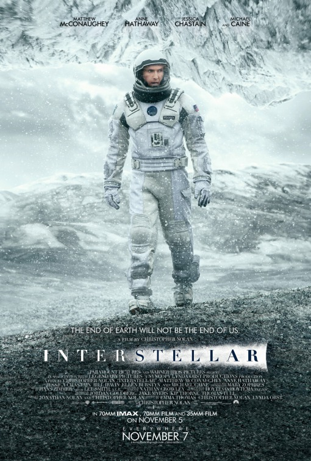

Interstellar

A beautiful sci-fi movie, which draws on many scientific concepts and insights. The visuals in this movie is also very stunning. Definitely one of my favorite space movie ever.
Jurassic World (2015)

One of the best movie in the Jurassic franchise, an amazing comeback to the beloved franchise after more than a decade long with new park, dinosaurs and characters.
Star Wars: Revenge of The Sith
.jpg)
My favorite star wars movie of all time, we literally got to see the final moment of Anakin, what happened to him and what lead him to turn to the dark side, becoming one of the best villain character in movie history, Darth Vader.
Transformers (2007)
.jpg)
The very first movie that i watched in the teather, seeing these cool cars transforms in to cool and fierce looking fighting robots was amazing as a kid (and still is till this day).
Pacific Rim

This movie is about giant robots called Jaegers fighting against giant monsters called Kaiju. The CGI is amazing, all the fight scenes are great, especially the one between the protagonist robot Gipsy Danger and Leatherback in the city (You should check it out on YouTube if you have the time!). The designs of the Jaegers and Kaijus are unique and iconic as well!
Top Gun Maverick

Top Gun: Maverick is a really fun movie with gorgeous cinematography. Watching these F/A-18 jets in action is amazing, it's just so cool to see jets flying at high speeds and engaging in dogfights and maneuvers! It also has one of the best soundtracks ever, with OneRepublic's "I Ain't Worried," really catchy song, which perfectly suits the vibe of the movie.
World War Z

The best zombie movie to date, i like how the zombies are all fast and they attack in a horde, they can legit make a zombie-stack to climb walls and stuff, which makes them even more terrifying than they already are.
The Hunger Games

My first and favorite Dystopian movie, when you're seeing how the game is being controlled and played out it's really freaking cool, but the idea and the lore of the game itself is terrifying and upsetting, because most of the players there were forced to participate for the well-being of their district every year.
Tangled

My favorite disney princess movie, i watched this like more than 5 times when i was a kid and loved it everytime lol. All the songs are beautiful and so catchy too.
How to Train Your Dragon 1-3

They tame and ride dragons, what more can you ask, and the story is well made too. I'd say this is an example of a perfect trilogy. Toothless is so adorable and cool man, his bond with Hiccup is beautifully made too.
Finding Nemo

One of my favorite animated movie, emotional and beautiful story, i started exploring more about the ocean life after watching this movie multiple times when i was a kid, this movie is also the one that made me love sharks and whales!
Toy Story 1-3

Every kid loves this franchise (well, at least everyone that i know of). Watched the first and second one as much as i can remember as a kid, and i think the first one is the first animated movie i watched as a kid as well. Loved the second and third movie as well.
The Incredibles

I love the story of this film, and this is probably the first superhero movie i watched as a kid too!
Monsters Inc

Beautiful story with an emotional, touching ending, i still want to cry everytime i watched the ending of this movie. This was probably my favorite animated movie when i was a kid, along with Finding Nemo, Toy Story and The Incredibles.
Monsters University

A cool sequel to the first one, we got to explore the world of the monsters a bit more and of course an in depth look at the start of Sully and Mike's beautiful friendship and their rivalry with Randall, and how it leads to them being where they are in the first movie!